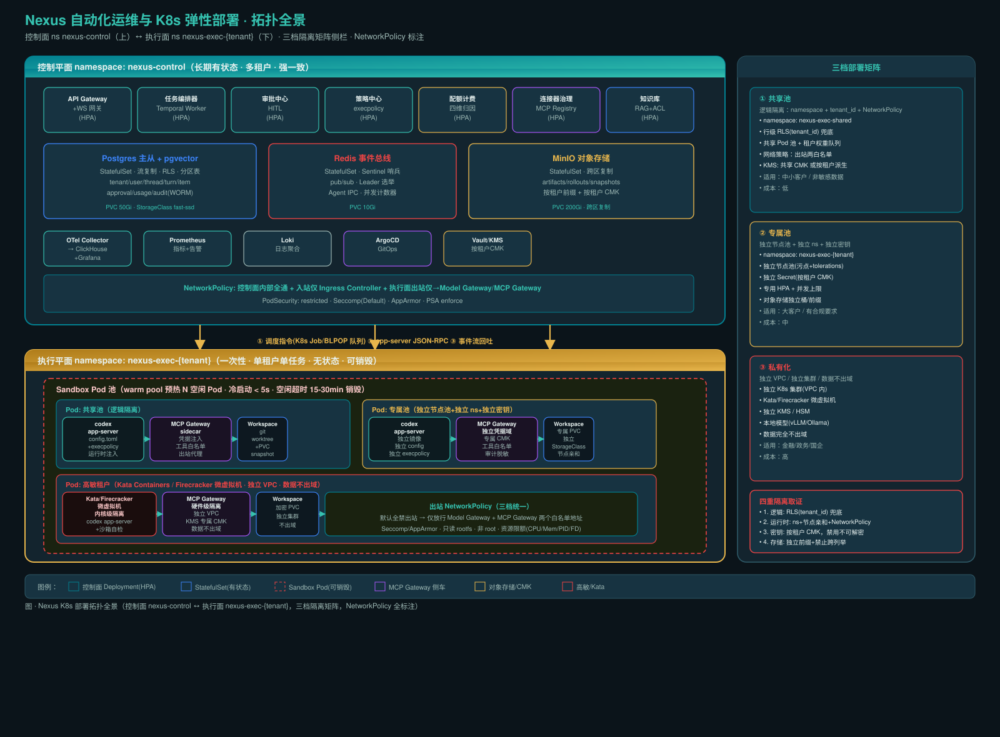

0. 核心判断（结论先行）
一句话：控制面跑在
nexus-control 命名空间（长期有状态、多租户、强一致），执行面跑在 nexus-exec-{tenant} 命名空间（一次性、单租户单任务、无状态、可销毁），仅经 app-server JSON-RPC 与对象存储通信。五个决定成败的运维判断
| # | 判断 | 理由 |
|---|---|---|
| 1 | 控制面与执行面必须分命名空间部署 | 沙箱跑不受信代码（依赖安装、用户脚本、MCP stdio）；混在一起等于把整个平台暴露 |
| 2 | Sandbox Pod 池必须 warm pool 预热 | 冷启动目标 < 5s 靠 PVC snapshot + 预热空闲 Pod；不预热则首次任务体验极差 |
| 3 | 沙箱启动自检不过禁止调度生产任务 | Linux 容器可能因宿主不支持 Landlock/seccomp 致 Codex OS 沙箱失效（路线图 §3.4.2） |
| 4 | 出站 NetworkPolicy 默认全禁，仅放行两个白名单 | 执行面 Pod 出站只能到 Model Gateway 和 MCP Gateway；防数据外泄、C2 回连 |
| 5 | 配置即政策：运行时注入，任务结束即焚 | 沙箱内零长期密钥（路线图 §4.5）；配置不落盘到镜像 |
1. K8s 部署拓扑

图 · Nexus K8s 部署拓扑全景（控制面 nexus-control ↔ 执行面 nexus-exec-{tenant}，三档隔离矩阵，NetworkPolicy 全标注）
1.1 命名空间规划
| 命名空间 | 角色 | 生命周期 | 安全级别 |
|---|---|---|---|
nexus-control | 控制平面 | 长期驻留 | restricted PSA |
nexus-exec-shared | 共享池执行面 | 分钟-小时级 | restricted+NetworkPolicy |
nexus-exec-{tenant} | 专属池执行面 | 分钟-小时级 | restricted+独立密钥 |
nexus-infra | 基础设施（Ingress/ArgoCD） | 长期驻留 | privileged(管理员) |
nexus-monitor | 可观测 | 长期驻留 | restricted PSA |
1.2 控制面部署清单
nexus-control 命名空间组件全览
| 组件 | 类型 | 弹性 | 职责 |
|---|---|---|---|
| API Gateway + WS 网关 | Deployment | HPA 3-20 | 南北向流量、鉴权、WS 推送 |
| Temporal Worker | Deployment | HPA 2-10 | 任务编排、Workflow 队列 |
| 审批中心 HITL | Deployment | HPA 2-8 | 审批工单生命周期 |
| 策略中心 execpolicy | Deployment | HPA 2-6 | 策略下发、配置生成 |
| 配额计费 | Deployment | HPA 2-6 | 四维成本归因 |
| 连接器治理 | Deployment | HPA 2-8 | MCP Registry、凭据代理 |
| 知识库 RAG | Deployment | HPA 2-10 | 向量检索+ACL过滤 |
| Postgres 主从+pgvector | StatefulSet | 1+2 只读 | 结构化元数据、会话事件 |
| Redis 事件总线 | StatefulSet | 3+Sentinel | pub/sub、Leader选举、IPC |
| MinIO 对象存储 | StatefulSet | 4节点 | rollout/产物/snapshots |
| OTel Collector | Deployment | 2-5 | OTLP→ClickHouse+Prom+Loki |
1.3 三档部署矩阵
① 共享池（低成本）
逻辑隔离：namespace + tenant_id + NetworkPolicy
适用：中小客户/非敏感数据
隔离：RLS 兜底 + 共享 CMK + 共享桶+前缀
逻辑隔离：namespace + tenant_id + NetworkPolicy
适用：中小客户/非敏感数据
隔离：RLS 兜底 + 共享 CMK + 共享桶+前缀
② 专属池（中成本）
独立节点池(污点+tolerations) + 独立 ns + 独立密钥
适用：大客户/合规要求
隔离：按租户 CMK + 独立桶/前缀
独立节点池(污点+tolerations) + 独立 ns + 独立密钥
适用：大客户/合规要求
隔离：按租户 CMK + 独立桶/前缀
③ 私有化（高成本）
独立 VPC / 独立集群 / 数据不出域
适用：金融/政务/国企
隔离：Kata/Firecracker + 独立 KMS/HSM + 本地模型
独立 VPC / 独立集群 / 数据不出域
适用：金融/政务/国企
隔离：Kata/Firecracker + 独立 KMS/HSM + 本地模型
1.4 隔离四重取证
- 逻辑：所有查询强制带
tenant_id，Postgres RLS 兜底 - 运行时：namespace + 节点亲和性 + NetworkPolicy
- 密钥：按租户 CMK，租户禁用后其数据不可解密
- 存储：对象存储按租户前缀 + 独立桶策略，禁止跨前缀列举
每季度做一次跨租户越权演练（从 A 租户沙箱尝试访问 B 的资源），结果作为准入条件，不是可选项。
1.5 高敏租户：Kata / Firecracker
| 运行时 | 隔离级别 | 启动延迟 | 适用 |
|---|---|---|---|
| runc（默认） | 命名空间+cgroups | ~1s | 共享池 |
| gVisor | 系统调用拦截 | ~2s | 中等敏感 |
| Kata Containers | 硬件级（QEMU轻量VM） | ~3s | 高敏租户 |
| Firecracker | 微虚拟机（Rust） | ~2s | 高敏+高密度 |
2. 弹性伸缩
2.1 控制面 HPA 策略
| Deployment | 扩缩指标 | min | max | 目标值 |
|---|---|---|---|---|
| API Gateway | CPU 70% + QPS | 3 | 20 | CPU<70%, QPS<800/pod |
| Temporal Worker | 队列深度 | 2 | 10 | <50/pod |
| 审批中心 | 活跃Ticket数 | 2 | 8 | <30/pod |
| 知识库 RAG | 查询延迟P95 | 2 | 10 | <200ms |
HPA 关键 YAML（API Gateway）
apiVersion: autoscaling/v2
kind: HorizontalPodAutoscaler
metadata:
name: nexus-api-gateway-hpa
namespace: nexus-control
spec:
scaleTargetRef:
apiVersion: apps/v1
kind: Deployment
name: nexus-api-gateway
minReplicas: 3
maxReplicas: 20
metrics:
- type: Resource
resource:
name: cpu
target:
type: Utilization
averageUtilization: 70
- type: Pods
pods:
metric:
name: http_requests_per_second
target:
type: AverageValue
averageValue: "800"
behavior:
scaleUp:
stabilizationWindowSeconds: 30
policies:
- type: Percent
value: 100
periodSeconds: 30
scaleDown:
stabilizationWindowSeconds: 300
policies:
- type: Percent
value: 25
periodSeconds: 602.2 Sandbox Pod 池弹性
warm pool 机制：sandbox-pool-controller 维持 N 个空闲 Pod（默认 N=5）。任务到达时选取空闲 Pod → 注入配置/凭据 → 启动。任务结束 → 上传 rollout → 结算 → 审计 → Pod 销毁 → 补充新 Pod。
| 参数 | 值 | 理由 |
|---|---|---|
| warm pool 大小 | N=5（按租户权重） | 小租户共享，大租户专属 |
| 冷启动目标 | < 5s | warm pool + PVC snapshot + 预热镜像 |
| 空闲超时 | 15-30 min | 平衡预热成本与响应速度 |
| 队列调度 | 按租户权重+优先级+FIFO | 大客户高权重 |
2.3 多集群灾备
| 组件 | 灾备策略 | RPO | RTO |
|---|---|---|---|
| Postgres | 同步流复制→跨AZ只读+异步异地 | <1s（同步） | <30s |
| Redis | Sentinel自动故障转移+AOF | <1s | <10s |
| MinIO | 跨区复制（bucket replication） | <1min | 即时(只读降级) |
| K8s 集群 | 跨AZ多节点+Velero备份 | — | <5min |
3. 自动化运维
3.1 CI/CD：GitOps（ArgoCD）
Git 仓库是单一真相源 → ArgoCD 检测变更 → 生成 diff → 人工审批 → 同步 → 金丝雀(10%) → 验证 → 全量 → 异常则
argocd app rollback| 镜像 | 基础 | 大小 |
|---|---|---|
| nexus-control | distroless/nodejs20 | ~150MB |
| nexus-sandbox-python | python:3.12-slim + codex | ~800MB |
| nexus-sandbox-node | node:20-slim + codex | ~700MB |
| nexus-sandbox-rust | rust:1.75-slim + codex | ~1.2GB |
| nexus-sandbox-full | ubuntu:22.04 + 多语言 | ~2.5GB |
多阶段 Dockerfile 示例（Python sandbox）
# Stage 1: 构建 Codex 二进制
FROM rust:1.75 AS codex-builder
WORKDIR /build
COPY codex-rs/ .
RUN cargo build --release -p codex-app-server
# Stage 2: 运行时镜像
FROM python:3.12-slim AS runtime
RUN apt-get update && apt-get install -y --no-install-recommends \
git ca-certificates bubblewrap && \
rm -rf /var/lib/apt/lists/*
COPY --from=codex-builder /build/target/release/codex-app-server /usr/local/bin/
RUN useradd -m -s /bin/bash nexus
USER nexus
WORKDIR /workspace
HEALTHCHECK --interval=30s --timeout=5s --retries=3 \
CMD pgrep codex-app-server || exit 1
ENTRYPOINT ["codex-app-server"]3.2 配置注入（任务级即焚）
控制面按
租户+角色+工作区+风险等级 生成 config.toml + execpolicy + enabled_tools + AGENTS.md，以 K8s Projected Volume 投射卷注入 Pod，任务结束 Pod 销毁后 Secret/CM 自动回收。配置不落盘到镜像。config.toml 生成示例（无真实密钥）
# 生成时间: 2026-09-06T12:00:00Z
# 绑定: tenant=acme-corp, thread=th_abc, turn=tn_123
# TTL: 3600s
[model]
provider = "openai-compatible"
base_url = "http://model-gateway.nexus-control:8080/v1"
auth_token_env = "NEXUS_TASK_TOKEN" # 不写 API Key
[sandbox]
mode = "workspace-write" # 按角色 × 风险等级
linux = "landlock" # Codex OS 沙箱
[approval]
policy = "on-failure" # 失败才审批
[mcp]
server_config_dir = "/etc/codex/mcp" # 指向 sidecar，不写凭据3.3 沙箱启动自检
| # | 检查项 | 失败动作 |
|---|---|---|
| 1 | Landlock/seccomp/Seatbelt 可用性 | 标记节点不可调度 |
| 2 | 出站仅两白名单地址 | 拒绝启动 |
| 3 | 镜像无长期密钥（Trivy扫描） | 镜像拒推 |
| 4 | 只读 rootfs + 非 root | Pod 拒启 |
| 5 | 资源限额已生效 | 拒绝调度 |
| 6 | NetworkPolicy 已附加 | 拒绝调度 |
| 7 | seccomp profile 已加载 | 拒绝调度 |
沙箱自检 initContainer YAML
initContainers:
- name: preflight-check
image: nexus-sandbox-python:latest
command:
- bash
- -c
- |
set -e
codex --sandbox-check || { echo "SANDBOX_CHECK_FAILED"; exit 1; }
curl -sSf --max-time 3 http://model-gateway.nexus-control:8080/health || exit 1
curl -sSf --max-time 3 http://localhost:9090/health || exit 1
[ "$(id -u)" -ne 0 ] || { echo "RUNNING_AS_ROOT"; exit 1; }
touch /test-write 2>/dev/null && { echo "ROOTFS_WRITABLE"; exit 1; } || true
[ -f /sys/fs/cgroup/memory.max ] || { echo "NO_MEM_LIMIT"; exit 1; }
echo "PREFLIGHT_OK"
securityContext:
runAsNonRoot: true
readOnlyRootFilesystem: true
allowPrivilegeEscalation: false
capabilities:
drop: ["ALL"]3.4 备份灾备
| 备份对象 | 方法 | 频率 | 恢复目标 |
|---|---|---|---|
| Postgres | pg_dump + CronJob → MinIO | 每日全备+每小时增量 | <30min |
| MinIO 对象 | 跨区复制 | 实时 | 即时 |
| PV 快照 | Velero + CSI snapshot | 每日 | <5min |
| K8s 资源 | Velero backup | 每日 | <10min |
| Redis | AOF + RDB → MinIO | 每5min | <1min |
3.5 监控告警
全链路 Trace：OTel → ClickHouse + Grafana，串联「用户请求 → API Gateway → Temporal → Sandbox Pod → codex → 工具 → 模型」完整 span，按 tenant_id→thread_id→turn_id→item_seq 定位。
| 指标 | 类型 | 告警阈值 |
|---|---|---|
| concurrent_tasks | Gauge | >租户上限 → 超限 |
| task_duration_p95 | Histogram | >300s → 延迟 |
| task_error_rate | Counter | >5% → 错误率 |
| cost_per_task | Gauge | >日均3σ → 成本异常 |
| sandbox_escape_attempts | Counter | >0 → 沙箱逃逸(P0) |
| cross_tenant_access_denied | Counter | >0 → 跨租户越权(P0) |
| warm_pool_size | Gauge | <2 → warm pool不足 |
| pg_replication_lag | Gauge | >5s → 复制延迟 |
| 级别 | 触发 | 通知 | 响应 |
|---|---|---|---|
| P0 | 沙箱逃逸/跨租户越权 | PagerDuty+IM+电话 | <5min |
| P1 | 控制面宕机/PG不可用 | PagerDuty+IM | <15min |
| P2 | 并发超限/延迟P95>300s | IM群 | <1h |
| P3 | 成本异常/资源>85% | 日报 | <1d |
3.6 安全运维
| 维度 | 措施 |
|---|---|
| 镜像安全 | Trivy扫描(CI门禁)+Cosign签名 |
| 网络策略 | 执行面默认全禁出站，仅放行Model Gateway+MCP Gateway |
| Seccomp | RuntimeDefault或自定义nexus-sandbox profile |
| PSA | restricted级别（禁止privileged/hostPath） |
| 密钥管理 | Vault/云KMS，按租户CMK，IRSA短期凭证 |
| 审计 | API调用+工具执行+模型采样→WORM日志 |
| 红队演练 | 每季度跨租户越权演练 |
4. 关键 K8s 清单概要
4.1 Namespace + PSA
apiVersion: v1
kind: Namespace
metadata:
name: nexus-control
labels:
name: nexus-control
pod-security.kubernetes.io/enforce: restricted
pod-security.kubernetes.io/audit: restricted
pod-security.kubernetes.io/warn: restricted
---
apiVersion: v1
kind: Namespace
metadata:
name: nexus-exec-shared
labels:
name: nexus-exec-shared
pod-security.kubernetes.io/enforce: restricted4.2 控制面 Deployment（API Gateway）
apiVersion: apps/v1
kind: Deployment
metadata:
name: nexus-api-gateway
namespace: nexus-control
spec:
replicas: 3
strategy:
type: RollingUpdate
rollingUpdate: {maxSurge: 1, maxUnavailable: 0}
template:
spec:
securityContext:
runAsNonRoot: true
seccompProfile: {type: RuntimeDefault}
topologySpreadConstraints:
- maxSkew: 1
topologyKey: topology.kubernetes.io/zone
whenUnsatisfiable: DoNotSchedule
terminationGracePeriodSeconds: 1204.3 Postgres StatefulSet
apiVersion: apps/v1
kind: StatefulSet
metadata:
name: postgres-primary
namespace: nexus-control
spec:
serviceName: postgres-primary
replicas: 1
volumeClaimTemplates:
- metadata: {name: data}
spec:
accessModes: ["ReadWriteOnce"]
storageClassName: fast-ssd
resources:
requests: {storage: 50Gi}4.4 NetworkPolicy（执行面默认全禁+白名单）
# 默认全禁出站
apiVersion: networking.k8s.io/v1
kind: NetworkPolicy
metadata:
name: sandbox-default-deny-egress
namespace: nexus-exec-shared
spec:
podSelector:
matchLabels: {app: sandbox-pod}
policyTypes: [Egress]
egress: []
---
# 仅放行 Model Gateway + MCP Gateway + DNS
apiVersion: networking.k8s.io/v1
kind: NetworkPolicy
metadata:
name: sandbox-egress-allow
namespace: nexus-exec-shared
spec:
podSelector:
matchLabels: {app: sandbox-pod}
policyTypes: [Egress]
egress:
- to: # Model Gateway
- namespaceSelector:
matchLabels: {name: nexus-control}
podSelector:
matchLabels: {app: model-gateway}
ports: [{protocol: TCP, port: 8080}]
- to: # DNS
- namespaceSelector:
matchLabels: {name: kube-system}
ports: [{protocol: UDP, port: 53}]4.5 Sandbox Pod（warm pool + 三容器+三卷）
apiVersion: v1
kind: Pod
metadata:
name: sandbox-pod-warm-001
namespace: nexus-exec-shared
labels:
app: sandbox-pod
nexus.io/status: warm
spec:
securityContext:
runAsNonRoot: true
seccompProfile:
type: Localhost
localhostProfile: nexus-sandbox
initContainers:
- name: preflight-check
# ...（见 §3.3）
containers:
- name: codex-app-server
image: nexus-sandbox-python:latest
securityContext:
readOnlyRootFilesystem: true
allowPrivilegeEscalation: false
capabilities: {drop: ["ALL"]}
env:
- name: NEXUS_TASK_TOKEN
valueFrom: {secretKeyRef: {name: task-token-001, key: token}}
volumeMounts:
- {name: config, mountPath: /etc/codex, readOnly: true}
- {name: workspace, mountPath: /workspace}
- name: mcp-gateway-sidecar
image: nexus-mcp-gateway:latest
ports: [{containerPort: 9090}]
volumes:
- name: config
projected:
sources:
- secret: {name: codex-config-001}
- secret: {name: execpolicy-001}
- configMap: {name: agents-md-001}
- name: workspace
persistentVolumeClaim: {claimName: workspace-pvc-001}
- name: tmp
emptyDir: {medium: Memory, sizeLimit: 512Mi}
tolerations:
- {key: nexus-exec, operator: Equal, value: "true", effect: NoSchedule}4.6 Service + Ingress
apiVersion: networking.k8s.io/v1
kind: Ingress
metadata:
name: nexus-ingress
namespace: nexus-control
annotations:
cert-manager.io/cluster-issuer: letsencrypt-prod
nginx.ingress.kubernetes.io/proxy-read-timeout: "3600"
spec:
ingressClassName: nginx
tls:
- hosts: [nexus.example.com]
secretName: nexus-tls
rules:
- host: nexus.example.com
http:
paths:
- {path: /api, pathType: Prefix, backend: {service: {name: nexus-api-gateway, port: {name: http}}}}
- {path: /ws, pathType: Prefix, backend: {service: {name: nexus-api-gateway, port: {name: ws}}}}4.7 CronJob（Postgres 备份）
apiVersion: batch/v1
kind: CronJob
metadata:
name: pg-backup
namespace: nexus-control
spec:
schedule: "0 2 * * *"
jobTemplate:
spec:
template:
spec:
restartPolicy: OnFailure
containers:
- name: pg-backup
image: postgres:16-alpine
command:
- bash
- -c
- |
pg_dump -h postgres-primary -U nexus nexus | gzip > /backup/nexus-$(date +%Y%m%d-%H%M%S).sql.gz
mc cp /backup/nexus-*.sql.gz minio/backups/postgres/
find /backup -name "nexus-*.sql.gz" -mtime +30 -delete4.8 ResourceQuota + PodDisruptionBudget
# 租户配额
apiVersion: v1
kind: ResourceQuota
metadata:
name: tenant-quota-shared
namespace: nexus-exec-shared
spec:
hard:
requests.cpu: "32"
requests.memory: 64Gi
pods: "50"
---
# PDB（控制面不可同时不可用）
apiVersion: policy/v1
kind: PodDisruptionBudget
metadata:
name: postgres-pdb
namespace: nexus-control
spec:
maxUnavailable: 0
selector:
matchLabels: {app: postgres, role: primary}5. 运维流程
5.1 发布流程
开发 → CI(测试+镜像构建) → 推送镜像 → 更新 GitOps 仓库 → ArgoCD 检测 → diff审批 → 同步 → 金丝雀(10%) → 验证 → 全量 → 异常回滚
5.2 沙箱生命周期
- warm pool 控制器维持 N 个空闲 Pod
- 任务到达 → controller 选取空闲 Pod → 注入 config/凭据/AGENTS.md
- initContainer 自检 → 通过 → 启动 codex app-server
- 事件流回传 → 控制面消费 → 写 Postgres → 推 WS
- 任务完成 → 上传 rollout → 结算 → 审计
- Pod 销毁 → Secret/CM 回收 → warm pool 补充
5.3 故障应急
| 场景 | 检测 | 响应 |
|---|---|---|
| 沙箱Pod OOM | liveness失败 | 重启→持续则驱逐节点 |
| PG主库宕机 | 复制延迟告警 | 提升只读副本→更新Service |
| 网络策略误配 | 跨租户越权告警 | 隔离ns→紧急修复→红队验证 |
| 镜像投毒 | Trivy扫描 | 阻止部署→下架→审计 |
| 模型API限流 | 4xx/5xx | 降级备模型→排队→告知用户 |
6. 与八层架构对齐
| 层 | K8s 对应 | 运维职责 |
|---|---|---|
| L1 接入 | Ingress + Cert-Manager | TLS轮转、域名管理 |
| L2 网关 | Deployment(API Gateway)+HPA | 流量管理、限流 |
| L3 控制面 | Deployment(Temporal等)+HPA | 编排、策略下发 |
| L4 执行面 | Pod(sandbox)+warm pool+NetworkPolicy | 沙箱调度、自检、销毁 |
| L5 Harness | 容器内 codex app-server | 镜像构建、版本管理 |
| L6 模型 | Deployment(Model Gateway) | 模型路由、故障转移 |
| L7 存储 | StatefulSet(PG/Redis/MinIO)+CronJob | 备份灾备、容量 |
| 贯穿安全 | NetworkPolicy+Seccomp+PSA+KMS | 红队、密钥轮转 |
7. 验收清单
| # | 验收项 | 方法 |
|---|---|---|
| 1 | 控制面3副本跨AZ部署 | kubectl get pods -o wide |
| 2 | HPA生效(CPU>70%扩容) | 压测+kubectl get hpa |
| 3 | warm pool维持N空闲Pod | kubectl get pods -l nexus.io/status=warm |
| 4 | 冷启动<5s | 端到端计时 |
| 5 | 沙箱自检阻断不合规Pod | 故意配错→自检失败 |
| 6 | NetworkPolicy阻断出站 | curl非白名单超时 |
| 7 | PG流复制可用 | 主库写→只读读一致 |
| 8 | 备份可恢复 | velero restore+校验 |
| 9 | OTel trace全链路 | span完整(用户→模型) |
| 10 | 跨租户越权告警 | 红队演练→P0触发 |
| 11 | GitOps发布+回滚 | ArgoCD发布+rollback |
| 12 | 三档隔离矩阵验证 | 共享/专属/私有各一次 |